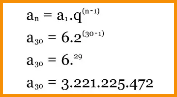

PROGRESSÃO GEOMÉTRICA
Progressão Geométrica (PG) é uma continuidade numérica em que a divisão de um termo com o seu anterior, exceto o primeiro, resultará em um único valor, a chamada razão (q), ou seja:
PG: (a1, a2, a3, a4, ..., an) , sendo q = (a2/a1 = a3/a2 = a4/a3,...)
A multiplicação da própria razão (q) também define uma sequência numérica da progressão. Entenda nos exemplos:
PG: (5, 25, 125, 625, …)
Nesta progressão, o valor que determina seu consecutivo é o cinco, ou seja, a sequência é uma PG de
razão igual a cinco (q = 5), pois 5 x 5 = 25; 25 x 5 = 125; 125 x 5 = 625 e assim sucessivamente.
Já na PG: (2,4,8,16,32,64, ...) a razão é 2 (q =2), pois 2 x 2 = 4; 4 x 2= 8; 8 x 2 =16 e assim
consecutivamente. A razão de uma progressão geométrica é composta por
valores constantes e racionais (positivos, negativos e frações), com exceção do zero.
Existe outro tipo de série numérica, a progressão aritmética. Nessa categoria, cada termo é dado
pela soma do número anterior, resultando na razão (r).
TIPOS DE P.G
As progressões geométricas são classificadas de acordo com o valor da razão. Elas se dividem em crescentes, decrescentes, oscilantes e permanentes.
PG Crescente
Nesse tipo de progressão geométrica a razão é maior que zero e feita por números crescentes:
(9, 27, 81, 243, 729...), no qual q = 3PG Decrescente
Na progressão decrescente a razão é maior ou diferente de zero, e os números da sequência serão menores que seus antecessores, ou seja, termos em forma decrescente:
PG: (- 6, -36,- 216, - 1296 ...) no qual q = 6PG Oscilante
Na progressão geométrica constante a razão sempre será igual a 1. Portanto, a sequência terá o mesmo valor.
(6,6,6,6,6...) no qual q = 1PG Constante
Nesse tipo de progressão geométrica a razão é maior que zero e feita por números crescentes:
(9, 27, 81, 243, 729...), no qual q = 3PG quase Nula
Nessa progressão apenas um elemento da sequência será diferente de zero:
(9, 27, 81, 243, 729...), no qual q = 3Aplica-se a fórmula abaixo para encontrar os valores de uma determinada progressão geométrica:
an: valor desconhecido
a1: primeiro termo da sequência geométrica
q: razão elevada ao número desconhecido menos 1
Vamos determinar o 30° termo da progressão geométrica com q = 2 e de sequência inicial 6.
Veja outro exemplo:
Uma progressão com a = 4 e q = 3 o 5° termo será:
PG: (4, 12, 36,108...)
A soma dos números de uma progressão geométrica é dada pela seguinte fórmula:
Sn: Soma dos números da PG
a1: primeiro termo da sequência geométrica
q: razão
n: número de termos da PG
Para melhorar seus estudos...
Matemática pode ser um conteúdo difícil. Para aumentar seu aprendizado, acesse ao mapa mental e a playlist de vídeo aulas sobre este assunto:
Mapa mental playlist de videoaulas